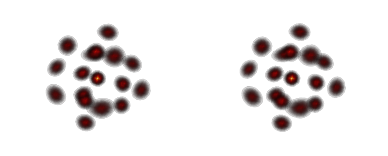
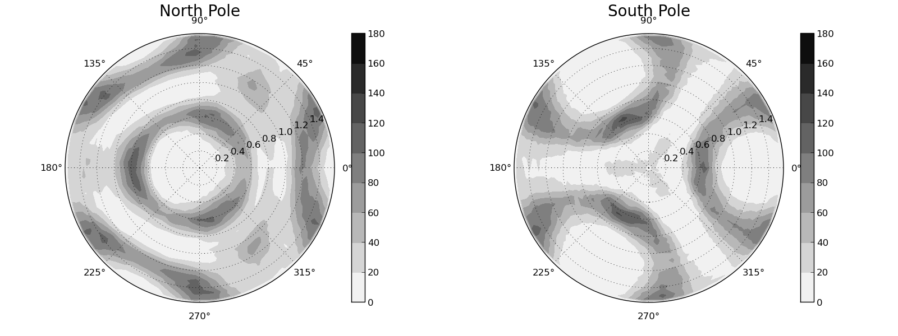

Visualizing LAMs
The result of the LAM method is a statistically averaged density. This is best plotted as a 3D contour plot. The software package Mayavi was used to facilitate this. Due to the binning procedure, smooth contours were created by further applying a Gaussian filter. Stereograms were then produced by placing 2 different snapshots side-by-side with an azimuthal rotation of 5 degrees applied between the 2 images. The LAM could then be viewed using the full set of atoms defining a cluster, or with filters being applied such as the fixed distance and tree filter. A radial filter was also commonly applied to view a 3D LAM with different coordination numbers as there is an expectation of the structure being different as a result. It is difficult to make quantitative conclusions using a 3D LAM as a consequence of viewing them through 2D media. However, many structural descriptions that are impossible to see with traditional analysis are now exceptionally clear. Once these structural features are visually identified, it is possible to computationally obtain quantitative evidence
Cross-eye stereogram
In print, animations are naturally useless for sharing figures. The best way to get around this is to have to snapshots taken at different perspectives that match the spacing of the human eye. These images can be displayed on 3D capable screens using various software but on paper, the cross-eye technique can be used. Two images are displayed side-by-side and the goal is to have the right eye focus on the left image and left eye focus on the right image. You do this by crossing your eyes and have the images overlap until it becomes in focus and in 3D. This site has a really good explanation with animations and examples to help you out. The end result of this technique is being able to get a good view of a crystalline LAM shown below where viewing in 2D is dififcult to gauge depth.
2D Pole Figures
2D Pole figures are fairly self-explanatory but are not typically applied to atomic visualizations. It is a 2D projection of spatial data in polar coordinates. For a given radial slice of some predetermined thickness the polar angle is projected radially and the azimuthal angle is projected as a rotation. This preserves all the angular information and presents it in such a way that quantifiable spatial data is both preserved and easily presented.
